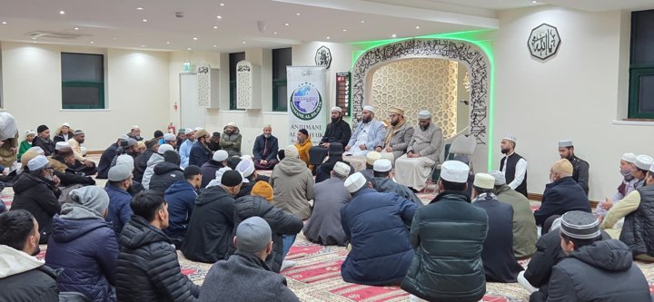
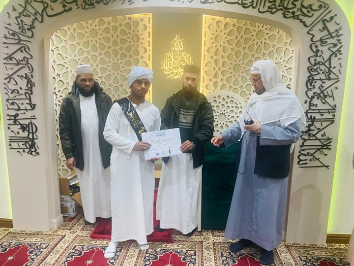
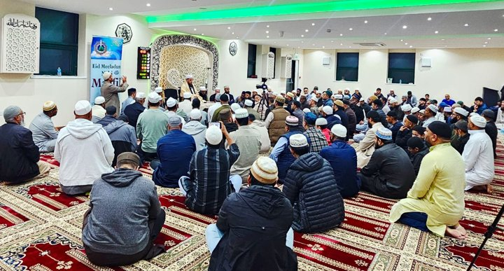
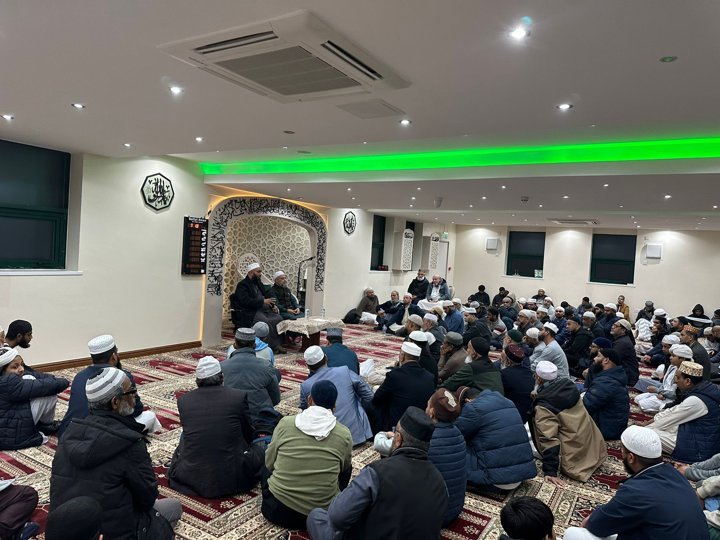
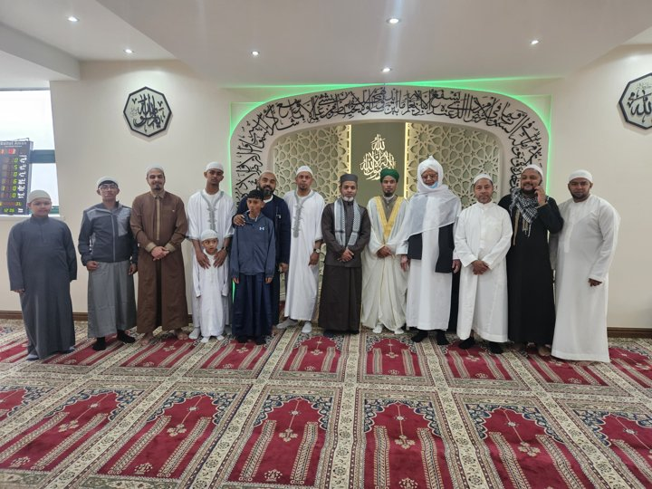
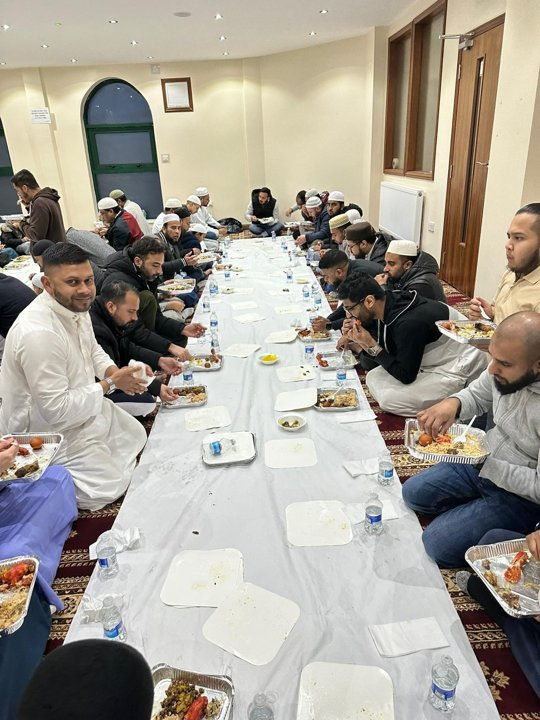
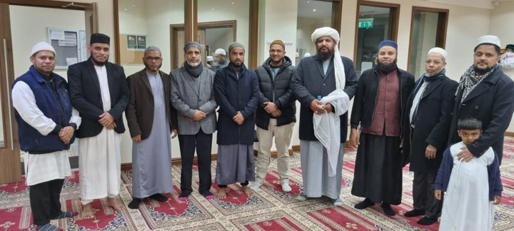
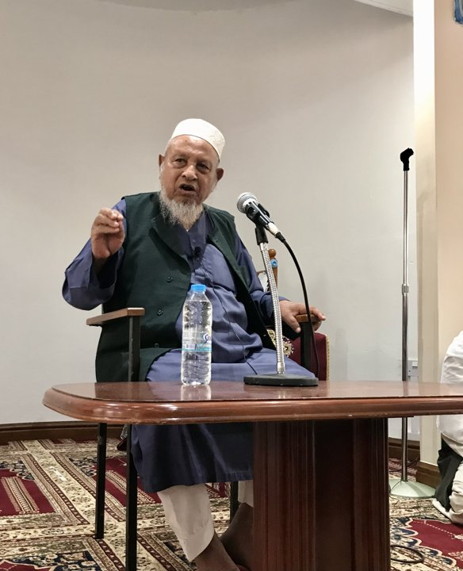
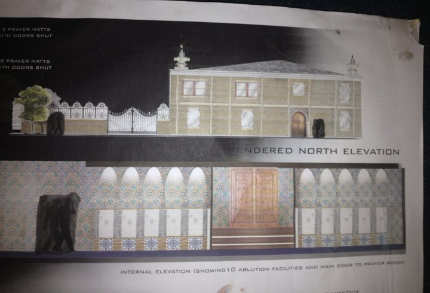
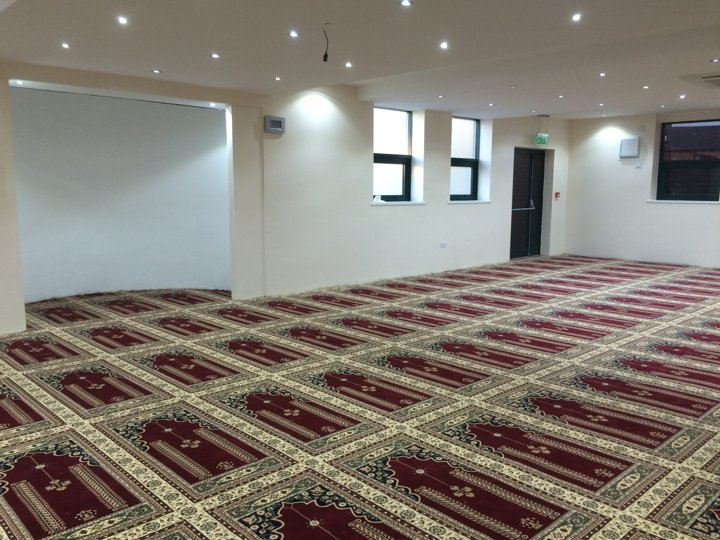

MOMENTS TOGETHER
Our community
in pictures.
Explore our gatherings, celebrations and masjid history. Choose an album to see the photographs.

January 2026 · 8 photos
Allama Fultali Sahib Esaal al Thawab Mahfil
Addresses and moments together at the remembrance gathering.
View album →
December 2025 · 6 photos
Darul Qirat Graduation
Celebrating Qur’anic learning, with turban presentations and certificates.
View album →
2 September 2025 · 1 photo
Mufti Gias Uddin Chowdhury Fultoli
A gathering at the masjid for an address by the visiting scholar.
View album →
2025 · 2 photos
Eid Mawlid ul Nabi ﷺ Conference
Congregants gathered for the annual conference.
View album →
June 2025 · 1 photo
Eid ul Adha
A community photograph after the Eid jamaat.
View album →
March 2024 · 9 photos
Iftar Mahfil
Breaking the fast together during Ramadan.
View album →
March 2023 · 16 photos
Iftar Mahfil
Shared meals and community portraits during Ramadan.
View album →
July 2019 · 2 photos
Shaykh ul Hadith Habibur Rahman’s Visit
Photographs from the scholar’s address at the masjid.
View album →
2013 · 5 photos
Refurbishment Design Plans
Architectural drawings and visualisations for the refurbishment.
View album →
May 2013–May 2014 · 33 photos
The Refurbishment of Baitul Aman Masjid
From groundwork and steelwork to the refurbished prayer hall.
View album →A WEEKLY OPPORTUNITY TO LEARN
Grow closer to
the Qur’an.
Learn correct recitation through group recital practice and Tajweed rules.
Organised by Baitul Aman Jame Masjid and Anjumane Al Islah, Bradford.